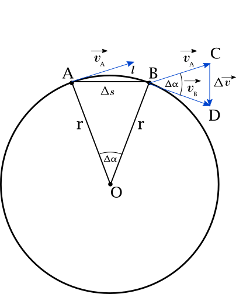

Isaac Newton
25 December 1642 – 20 March 1726
Creator of: Laws of Motion
First equation of motion

Acording to the definition, acceleration \(a\) is change of speed \(\Delta v\) in the
time interval \(\Delta t\). In short periods of time we can write this as differential equation.
\begin{equation}a = \frac{dv}{dt}\end{equation}
$$\rightarrow a \mkern3mu dt = dv $$
Solving this we need to integrate over velocity and time change.
This is from the moment \(t_{0}\), \(v_{0}\) when the movement started, to \(v_{1}\), \(t_{1}\)
when the movement was finished.
$$a \int^{t_{1}}_{t_{0}} dt = \int^{v_{1}}_{v_{0}} dv$$
At the beginning of the movemet time \(t_{0}\)
is equal to 0 and \(v_{0}\) to \(u\). Values \(v_{1}\) and \(t_{1}\) we can put as equal to final velicoty
\(v\) and entire moving time \(t\)
$$a \int^{t}_{0} dt = \int^{v}_{u} dv$$
After integration we get
$$at = v-u$$
Transforming this to get \(v\)
\begin{equation}v = u + at\end{equation}
Second equation of motion
Acording to the definition, velocity \(v\) is change of distance
\(\Delta x\) in the time interval \(\Delta t\). In short periods of time we can write
this as differential equation.
\begin{equation}v = \frac{dx}{dt}\end{equation}
Using equation (2) we get:
$$u + at = \frac{dx}{dt}$$
$$\rightarrow dx = (u + at)dt $$
Solving this we need to integrate over distance and time change.
This is from the moment \(t_{0}\), \(s_{0}\) when the movement started, to \(s_{1}\), \(t_{1}\)
when the movement was finished. Acceleration value \(a\) is constant.
$$\int^{s_{1}}_{s_{0}}dx = \int^{t_{1}}_{t_{0}} (u + at)dt$$
At the beginning of the movemet time \(t_{0}\) nad distance \(x_{0}\)
are bouth equal to 0 . Values \(s_{1}\) and \(t_{1}\) we can put as equal to final distance
\(s\) and entire moving time \(t\).
$$\int^{s}_{0}dx = \int^{t}_{0} (u + at)dt = \int^{t}_{0}u \mkern3mu dt + a\int^{t}_{0}t \mkern3mu dt$$
After integration we get
\begin{equation}s = ut + \frac{at^{2}}{2}\end{equation}
First law
If there is not any force describled by Newtons second law acting on
moving object, the object will by moving with initial speed \(u\)
$$if \mkern3mu F = 0 \rightarrow a = 0 \quad then \quad v = u = constant$$
or will by staing still if \(u = 0\).
$$if \mkern3mu F = 0 \rightarrow a = 0 \quad and \quad u = 0 \quad then \quad v = 0$$
Second law
\begin{equation} F = ma \end{equation}
Gravitation law

The value of the linear velocity in uniform motion around the
circle is constant, and is expressed through:
$$ v = \frac{\Delta s}{\Delta t} $$
The linear speed can also be represented as the ratio of the
circumference of the circle \(\pi\) to the period \(T\) where one turn was made.
$$ v = \frac{2\pi r}{T} $$
The movement on circle is constant. We can now consider movement
between two points A and B. In short period of time \(t, \alpha \rightarrow 0\) the lenght
of the circle's arc \(l\) will by fast the same as lenght of direct road \(\Delta s\)
between two points.
$$ l = \frac{\alpha 2\pi r}{360} \quad \Delta s = 2r sin\frac{\alpha}{2} $$
$$\lim_{\alpha \to 0}\frac{\alpha 2\pi r}{360} \quad \sim \quad \lim_{\alpha \to 0}2r sin\frac{\alpha}{2}$$
$$\Rightarrow l \sim \Delta s$$
On the sketch we see two similar triangle \(OAB\) and \(BCD\).
Therefore we can write relation between them:
$$\frac{\Delta s}{r} = \frac{\Delta v}{v}$$
Dividing thi by time of movement \(\Delta t\) we get:
$$\frac{1}{r}\frac{\Delta s}{\Delta t} = \frac{1}{v}\frac{\Delta v}{\Delta t}$$
Now we can see in this equation linear speed \(v\) and centripetal
acceleration \(a_{r}\).
$$\frac{1}{r}v = \frac{1}{v}a_{r}$$
\begin{equation} \Rightarrow a_{r} = \frac{v^{2}}{r} \end{equation}
Comparing centripetal acceleration (2) with acceleration from Newton
second law (1) we get:
$$\frac{v^{2}}{r} = \frac{F}{m} $$
From this, force \(F\) that holds object on round orbit will by:
$$F = \frac{mv^{2}}{r}$$
Using equation described linear velocity on circle \(v\) and third Keppler
law
$$v = \frac{2\Pi r}{T}$$
$$kT^{2} = r^{3}$$
$$\Rightarrow v^{2} = \frac{4\Pi^{2} r^{2}}{T^{2}} = \frac{4\Pi^{2}k r^{2}}{r^{3}} = \frac{4\Pi^{2}k}{r} $$
gravitional force will by thansform to:
$$F = \frac{m\frac{k4\Pi^{2}}{r}}{r} = 4\Pi^{2}k\frac{m}{r^{2}}$$
force origin comes from object in centre of circle, thats why we
can name this force as \(F_{BO}\). Make in consideration Newtons third law,
the same force but in opposed direction will by acting from object on orbit an object in the center.
$$F_{OB} = 4\Pi^{2}k\frac{M}{r^{2}}$$
As force of gravity is proportional to bouth forces
\(F_{BO}\) and \(F_{OB}\) so it must meet the combined requirement.
$$F_{g} \sim 4\Pi^{2}k\frac{mM}{r^{2}}$$
usint constant \(G = 4\pi^{2}k\) we get all know form of gravitional law.
\begin{equation}F_{g} = G\frac{mM}{r^{2}}\end{equation}
\(G\) value was first measured by Henry Cavendish